PORTFOLIO EKSAMEN
Udvikling & proces af portfolio site
I det sidste tema, portfolio eksamen, har jeg udviklet et site fungerende som et portfolio for alle opgaver i løbet af semesteret. Jeg har brugt viden og læring fra de tidligere temaer for at forstå hvordan jeg med HTML, CSS, javascript og designprincipper skal udvikle og designe et site.
Mit portfolio indeholder en forside, en om mig side, en side med overblik over alle temaer, en side listet med temaets væsentligste opgaver, og herunder specifik tekst om opgavens processdokumentaion, løsning og teori.
Jeg vil i følgende dokumentere og forklare dele af kodnings -og designprocessen bag udvikling af sitet.
I begyndelsen af processen sørgede jeg for mappestruktur, opsætning af HTML, CSS, javascript og GitHub. Jeg oprettede flere CSS'er til at style HTML siderne. Flere af siderne stylede jeg ens, så derfor oprettede jeg en 'tema.css' til alle tema siderne, og en 'opgaver.css' til alle siderne for opgaverne.
Jeg opdelte billeder, dokumenter og styles i hver sin mappe indeni portfolio mappen.
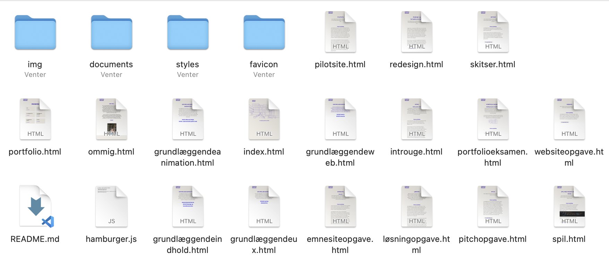
Jeg startede med at udvikle forsiden. Her brugte jeg viden og færdigheder fra de foregående temaer inden for adobe illustrator, hvor jeg tegnede en del af KEA bygningen.
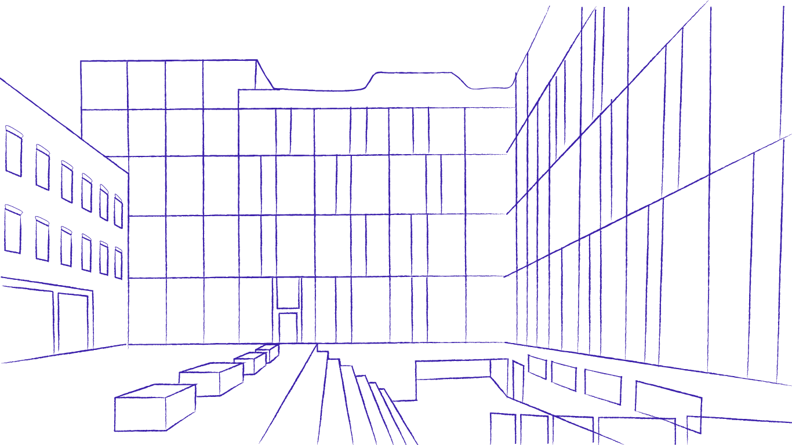
Jeg har gennem processen arbejdet med en bestemt struktur for burgermenuen, kodet i HTML, CSS og javascript.
På forsiden refererer jeg kun links til 'portfolio siden' og 'om mig siden', da jeg ønskede en simpel forside med tekst stående fremme. I og med jeg har mange HTML sider ville det skabe forvirring og rod, hvis alle links til HTML sider stod åbnet.
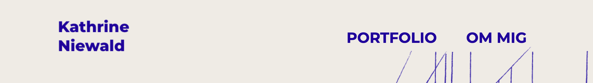
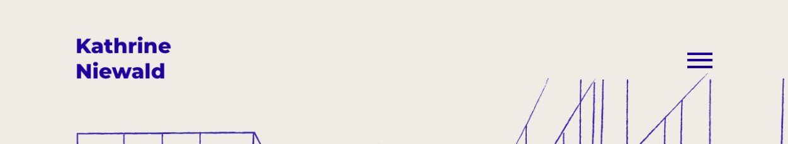
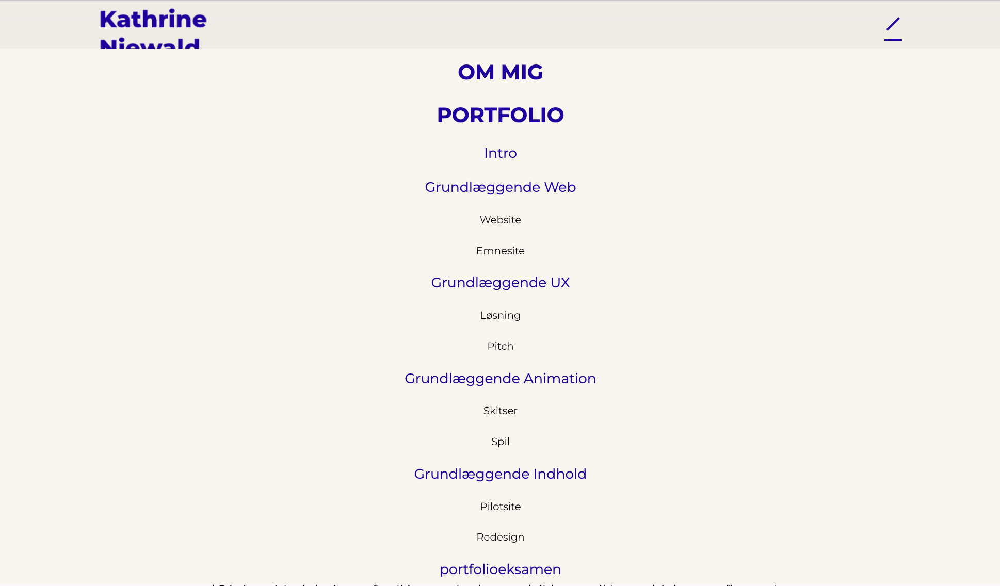
Burgermenuen er kodet i HTML, CSS og Javascript.
I HTML indsatte jeg en div med class navnet "hamburger" med tre spans under med class navnet "bar".
 Jeg gav burgermenuen en display block for at uv listen med links blev opsat som en blok.
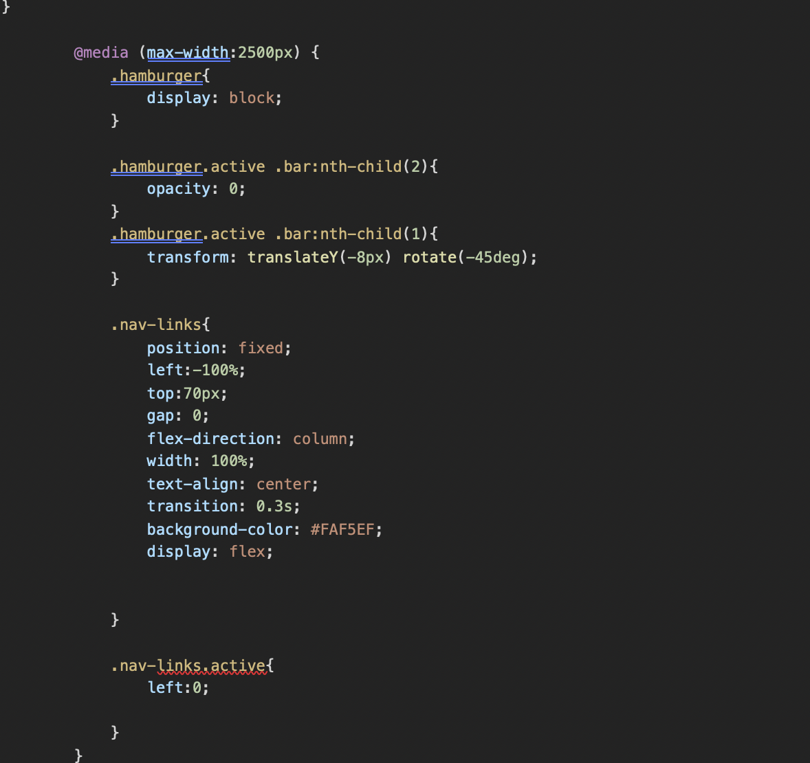
I javascript gjorde jeg burgermenuen interaktiv.
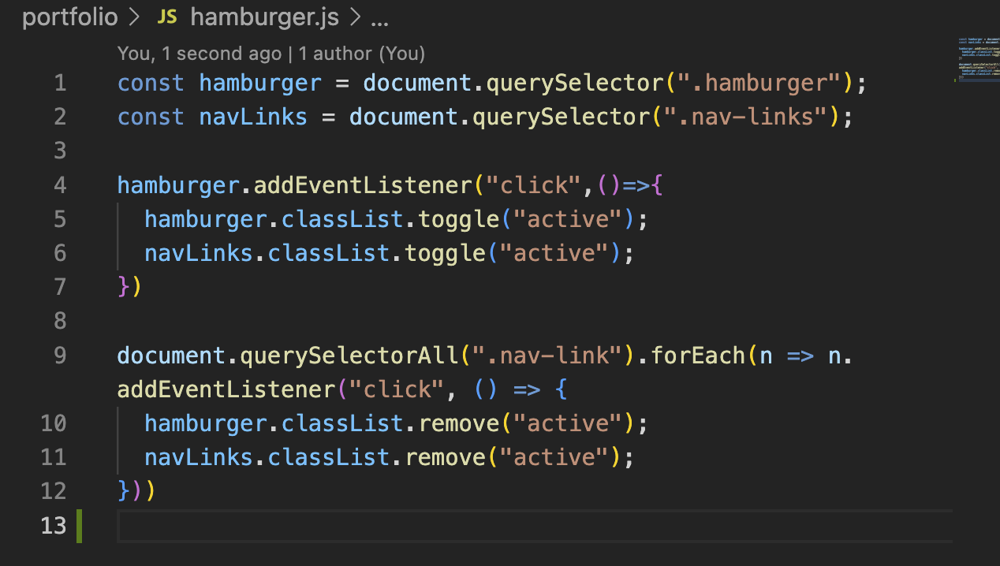
På 'om mig' siden udviklede jeg en knap i HTML og CSS for at linke til mit CV i en pdf fil. Knappen udviklede jeg senere også på alle opgave siderne, som en reference til opgaveløsningen, videoer og billeddokumentation. Her lavede jeg en div class rundt om et ikon og 'button' linket, for senere at style i CSS.
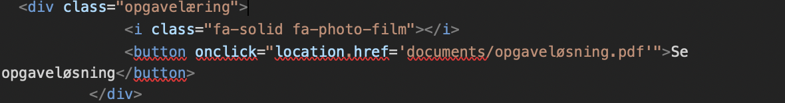
Jeg stylede knappen ved at indsætte dets navn, hvorefter jeg blandt andet stylede den i farver, font, margin og padding. Jeg ville gerne gøre knappen mere brugervenlig og integrerende. Jeg anvendte derfor en 'hover' effekt over knappen, som er en selektor der anvendes for at selektere elementer, når musen kører over. for at gøre den mere brugervenlig. Under hover selektoren indsatte jeg en background-color for farven ville ændre sig, når man kører musen over.
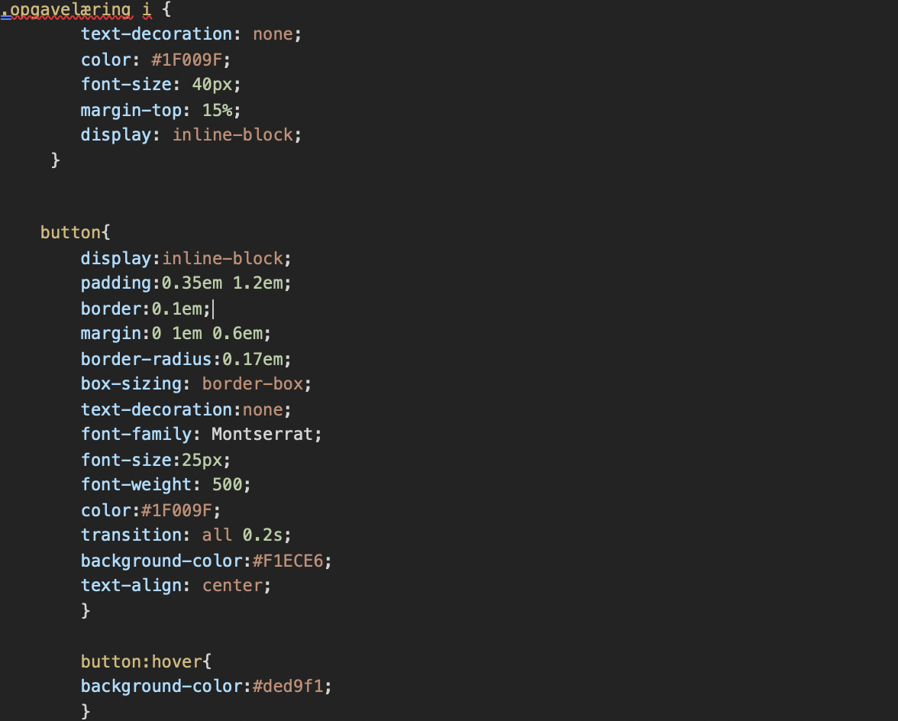
Jeg gav burgermenuen en display block for at uv listen med links blev opsat som en blok.
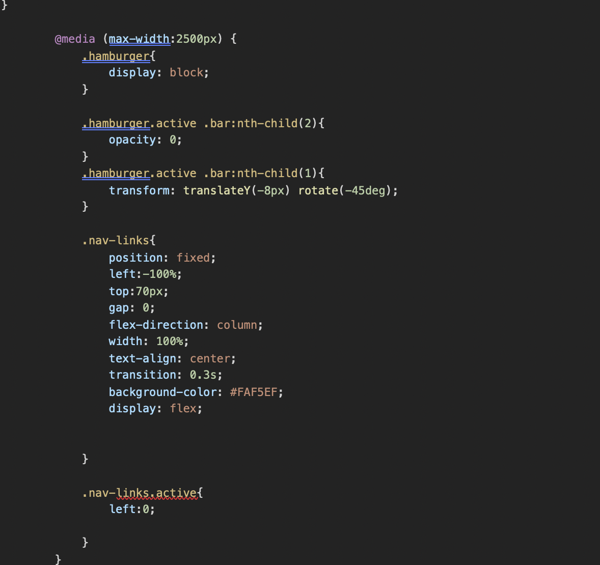
I javascript gjorde jeg burgermenuen interaktiv.
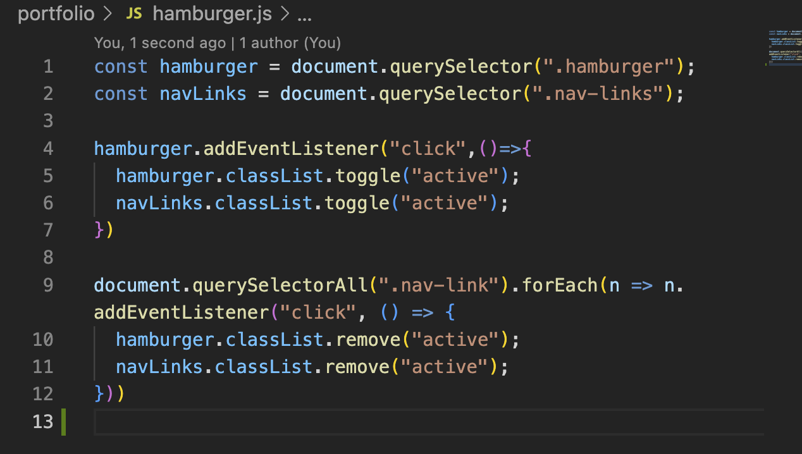
På 'om mig' siden udviklede jeg en knap i HTML og CSS for at linke til mit CV i en pdf fil. Knappen udviklede jeg senere også på alle opgave siderne, som en reference til opgaveløsningen, videoer og billeddokumentation. Her lavede jeg en div class rundt om et ikon og 'button' linket, for senere at style i CSS.
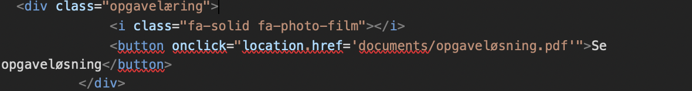
Jeg stylede knappen ved at indsætte dets navn, hvorefter jeg blandt andet stylede den i farver, font, margin og padding. Jeg ville gerne gøre knappen mere brugervenlig og integrerende. Jeg anvendte derfor en 'hover' effekt over knappen, som er en selektor der anvendes for at selektere elementer, når musen kører over. for at gøre den mere brugervenlig. Under hover selektoren indsatte jeg en background-color for farven ville ændre sig, når man kører musen over.
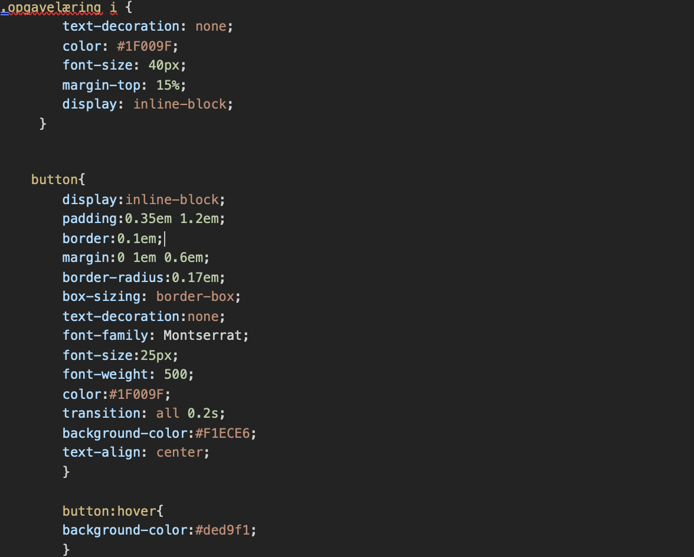